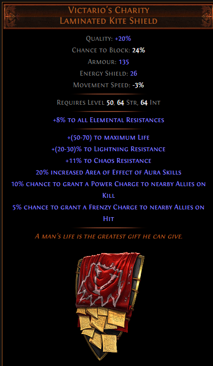

12) 미니언을 더 강하게 만들고 싶을 때 : Victario's Charity

이 방패의 핵심은 마지막 두 옵션입니다 : (본체가) 적 처치 시 10% 확률로 주변 아군에게 파워 차지 부여,
(본체가) 적 공격 시 5% 확률로 주변 아군에게 프렌지 차지 부여.
두 번째 옵션은 직접 발동이 가능은 하지만 귀찮고, 첫 번째 옵션은 발동이 거의 불가능하다 보시면 됩니다.
이를 해결할 수 있는 방법이 있는데, Necromantic Aegis 키스톤 노드를 찍는 것입니다. (스킬포인트 4개 필요)
Necromantic Aegis는 본체 대신 미니언들이 방패를 착용한 것처럼 바꿔주는 키스톤 노드입니다.
그러면 위의 저 발동하기 어려웠던 옵션이 이렇게 바뀝니다 : (미니언이) 적 처치 시 10% 확률로 주변 아군에게 파워 차지 부여,
(미니언이) 적 공격 시 5% 확률로 주변 아군에게 프렌지 차지 부여.
이렇게 바꾸면 옵션을 수월하게 발동시킬 수 있습니다.
본체의 몸빵을 약간 희생하는 대신 미니언을 강하게 만들어주는 방법인데, 각자 취향에 따라 선택하시면 되겠습니다.